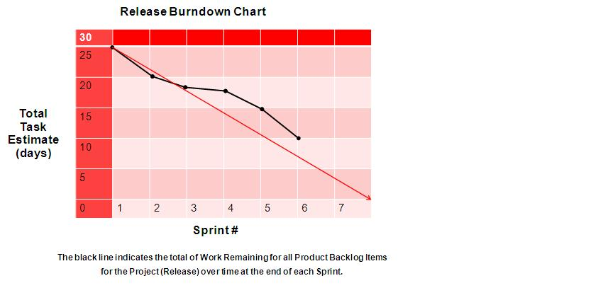
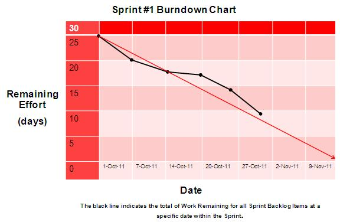

OUM |
Technique Overview |
||
Method Navigation |
Current Page Navigation |
||
|
|
||||||||
The goal of this technique is to provide guidance on additional metrics that can be applied to OUM projects.
Agile Project Metrics - The Agile Project Metrics are information that should supplement the traditional metrics and earned value management on a project using an agile approach. Agile project management emphasizes short increments of product development and delivering incremental updates of the product based on the continuously elaborated project requirements.
| No. | Step | Component | Description |
|---|---|---|---|
| 1 | Collect data and generate metric reporting. | Metric Data and Reports | |
| 2 | Analyze metrics and take corrective action, as appropriate. | None |
Collect the appropriate metrics to collect and report for the project. Projects that are less complex and/or shorter in duration may have less rigorous reporting needs than projects that are more complex and longer in duration. In addition, some projects may be governed by Program Management Offices (PMOs) that require certain metrics to be tracked and reported. Several types of metrics and their applicability are described below.
Once the overall scope of the project has been set, progress can be tracked using a simple Burndown Chart. A simple Burndown Chart is a line chart used to track progress. The Burndown Chart can show various metrics regarding project progress including use cases completed so far (which is an indication of the team’s velocity), estimated hours remaining, features completed, estimated effort remaining, etc. The metric tracked should be meaningful to the project team and project manager to measure progress and the team’s internal productivity.
The use of Burndown Charts as a measurement and reporting tool provides many of the benefits of Earned Value Management (EVM) a traditional project management process for measuring project progress, but in a different form. If the Burndown Charts are kept current and analyzed regularly, project managers can use them as a key indicator of project progress, potential issues and risks.
There are two types of Burndown Charts used in Scrum namely the release Burndown Chart and the sprint Burndown Chart.
A release Burndown Chart is a graphical representation of work remaining to be done the number of planned sprints within a release. A Burndown Chart is created by plotting outstanding work units remaining to be completed (such as the backlog of M’s and S’s from the MoSCoW List) on the vertical axis, with an indicator of the sprint timeline usually a sprint number along the horizontal axis. A release Burndown Chart could be done without using Scrum and would indicate scheduled days within an OUM iteration along the horizontal axis. This technique could be applied and included as a graphic to visually depict an iteration plan in OUM.

Example Release Burndown Chart
A sprint Burndown Chart is a graphical representation of work remaining to be done versus time remaining within a single sprint. A Burndown Chart is created by plotting outstanding work units remaining to be completed in the sprint on the vertical axis, with an indicator of the sprint timeline usually in number of days, or weeks remaining within the Scrum sprint (similar to scheduled days within OUM iterations) along the horizontal. For an OUM project not applying Scrum this is the equivalent to the total number of days of work planned for during an iteration on an OUM project. This technique can be used to give the team an early indicator when they are off-pace with target timeframes, early on before too much of the time allotted for the sprint has passed, well before the end of the sprint.

Example Sprint Burndown Chart
Burndown Charts are also important in project estimating since they give an idea of the team’s capacity. During backlog grooming meetings, the scrum master, product owner and scrum team can start to see a trend for how much work the team is typically able to complete during an individual sprint.
Velocity, which refers to the speed at which a team can implement and test use cases and change requests (that is, how much of the product backlog the team can complete), is reflected in the Burndown Charts by showing the progress made so far versus the planned/estimated progress. Velocity is the measurement of the number of units of work the team accomplishes per sprint. Another popular type of chart is a Burn up chart, which gives an indication work done over time. Although not used as often, a burn up chart records the work done (units) on the vertical axis and the sprint timeline across the horizontal axis.
The Burndown Chart examples above track progress by showing a decrease in the remaining project hours. A project team can select any measure they deem relevant to measure progress such as the number of use cases completed, scenarios completed, days remaining, etc.
| Visual Cue | Meaning |
|---|---|
Flat Line |
The team is not making progress as expected.
|
Upward Moving Line |
New requirements were added, bug fixes are identified or use cases previously considered complete have moved back into development.
|
Choppy Line that Slopes Up and Down |
Unforeseen complexities are arising.
|
Expected Line Movement
|
The team is successful at:
|
Agile EVM can bridge the gap between the traditional EVM used to predict and evaluate project progress and an agile project’s need for more immediate and relevant measurements. As in traditional EVM, EVM for agile projects requires initial baselines such as number of planned iterations, number of planned use cases in a release, and planned budget for the release. Also needed are the total number of use cases completed, number of iterations completed, actual cost and the number of use cases added or removed from the current release.
| Agile EVM Metric | Meaning |
|---|---|
PUC (Planned Use Cases) |
Total number of use cases planned for this release |
PW (Planned Weeks) |
Total number of planned development weeks |
BAC (Budget at Completion) |
Total budget for the release |
AW (Actual Weeks) |
Number of development weeks elapsed to date |
CUC (Completion Use Cases) |
Number of use cases completed to date |
PPC (Planned Percent Complete) |
AW/PW |
APC (Actual Percent Complete) |
CUC/PUC |
AC (Actual Cost) |
Total budge spent to date |
PV (Planned Value) |
Budgeted cost of the use cases that were scheduled to e completed as of this point in the project; PPC * BAC |
EV (Earned Value) |
Budgeted cost for the use cases actually completed as of today; APC * BAC |
CV (Cost Variance) |
Difference between planned schedule and actual time spent; EV - AC |
SV (Schedule Variance) |
Difference between planned schedule and actual time spent; EV - PV |
CPI (Cost Performance Index) |
EV / AC |
SPI (Schedule Performance Index) |
EV / PV |
ETC (Estimate to Complete) |
Based on current state, how much additional budget is needed to complete the release; 1/CPI * (BAC – EV) |
EAC (Estimate at Completion) |
Based on the current state, how much additional budget is needed to complete this release; EAC – AC + ETC |
Estimate Time to Complete |
Based on the current state, the total estimated time needed to complete the release; 1/SPI * PW |
The budget for a given release is $100,000 for a completion of 100 use cases. At this time, the project has completed 25 of the use cases at a cost of $20,000.
Actual percent complete = 25 completed use cases/100 use cases = 25% complete.
EV – actual percent complete x total budget = $25,000.
These modifications make EVM concepts more compatible with the agile techniques which lay at the foundation of OUM, while providing a familiar terminology and reporting mechanism.
Note: The EVM metrics noted above can also be applied at the iteration or phase level depending on the project’s reporting needs.
Analyze the agile metrics and if necessary initiate actions which will turn the project in a way such that it better aligns with the goals, expectations, and ultimate results laid out in the project management plan.
The following templates and tools are available to assist with this technique:
Template File Name |
Comments |
|---|---|
| MS EXCEL | |
| MS POWERPOINT | |
| MS POWERPOINT |
This technique is recommended for use in the following OUM tasks:
| Task | Usage |
|---|---|
| Use this technique to measure actual project accomplishments against what was planned for agile projects. | |
| Use this technique to measure actual project accomplishments against what was planned for agile projects. | |
| Use this technique to measure actual budget expended against what was planned for agile projects. |
Use the following criteria to check the quality of this technique:
This section is not yet available.

Copyright © 2006, 2016, Oracle and/or its affiliates. All rights reserved.